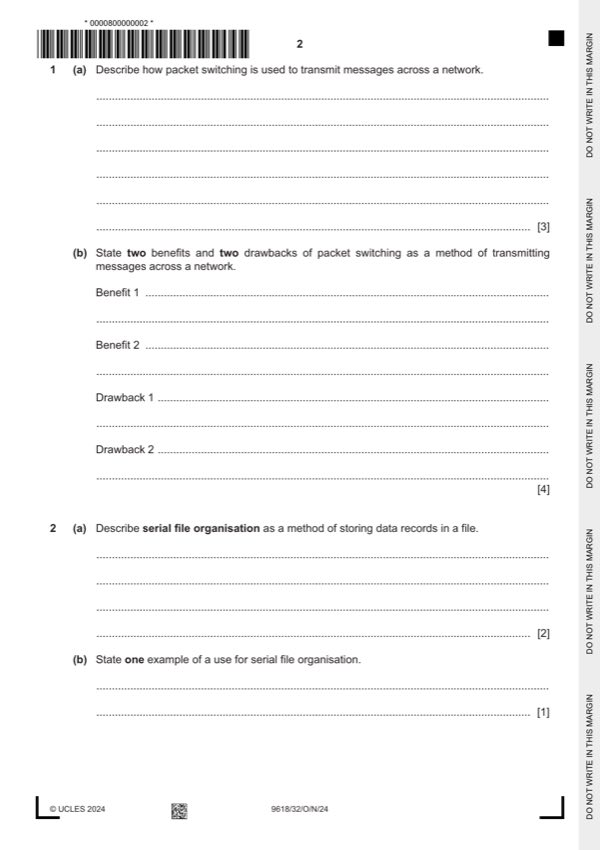
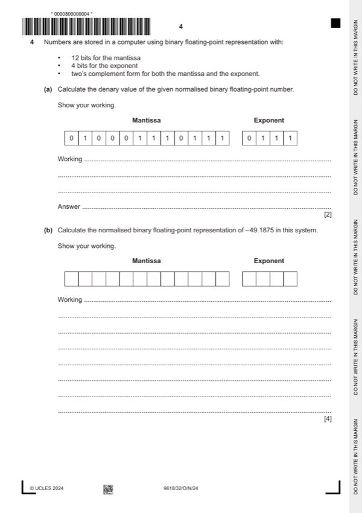
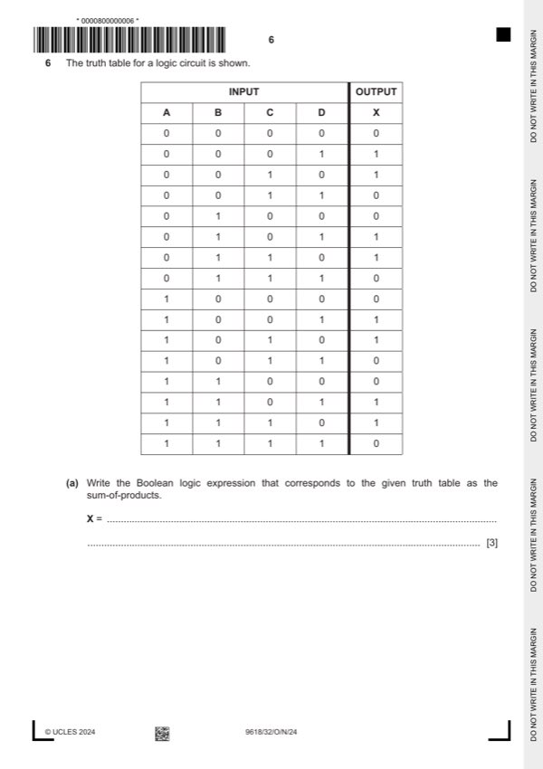
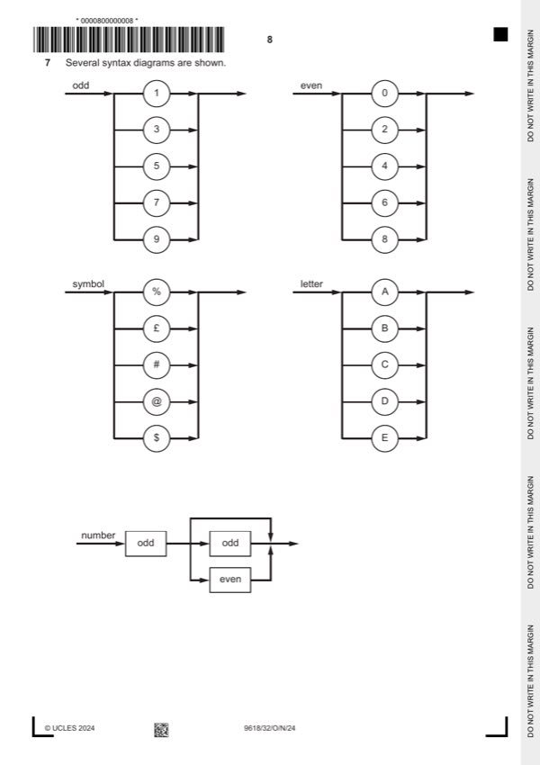
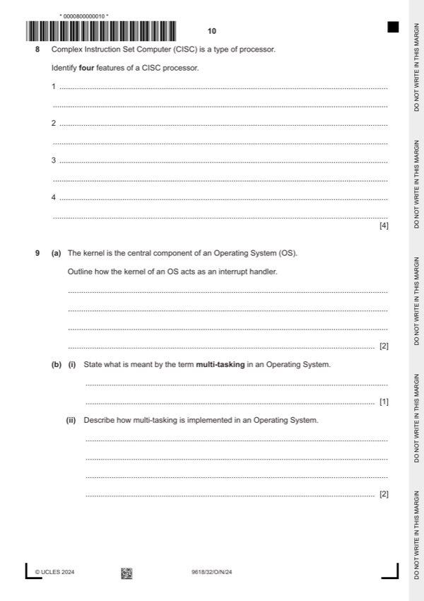
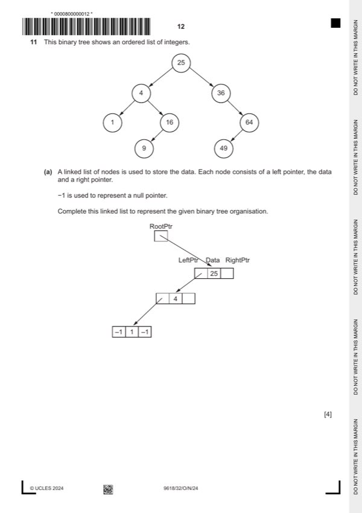

Question 0
Part 0 — solution
0 1 25 2
Mark points
- Include the ideas shown in the solution above.
Step-by-step solutions based on the mark scheme (not a mark-scheme dump).
Part 0 — solution

Part 1(a) — solution
Part 1(b) — solution
Part 1 — solution
Part 2(a) — solution
Part 2(b) — solution
Part 3(a) — solution
Part 3(b) — solution

Part 4(a) — solution
Part 4(b) — solution
Part 5(a) — solution
Part 5(b) — solution
Part 5 — solution

Part 6(a) — solution
Part 6(b) — solution
Answer: AB
Part 6(c) — solution
Answer: AB
Part 6(d) — solution
Part 6 — solution

Part 7(a) — solution
Part 7(b) — solution
Part 7(c)(i) — solution
Part 7(c)(ii) — solution
Answer: OR

Part 8 — solution
Part 8 — solution
Part 9(a) — solution
Part 9(b)(i) — solution
Part 9(b)(ii) — solution
Part 10(a) — solution
Part 10(b) — solution

Part 11(a) — solution
Part 11(b) — solution
Part 11(c) — solution
Part 25 — solution
Part 64 — solution